WRETVISION
Survival Horror Database
19 Reviews Logged
Average Score: 8.0/10
Coverage: 1996 to 2026
Case Files Recovered: 19 / 19
Classics: 8 / 8 ✓
Remakes: 4 / 4 ✓
Mainline: 3 / 3 ✓
Spin-Offs: 4 / 4 ✓
► INVENTORY
Select an item to view review
01
Classic
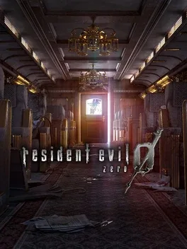
Resident Evil 0
6/10
02
Classic
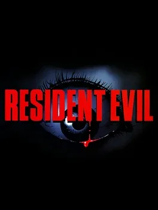
Resident Evil 1 (Classic)
8/10
03
Remake
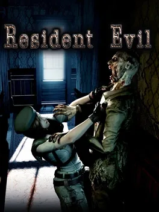
Resident Evil 1 HD Remaster
8/10
04
Classic
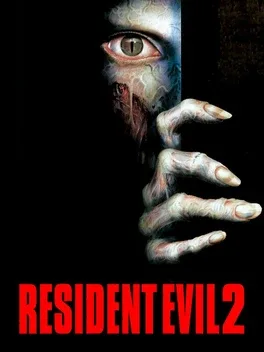
Resident Evil 2 (Classic)
9/10
05
Remake
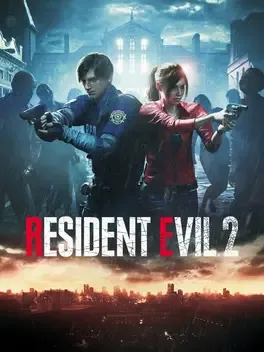
Resident Evil 2 Remake
9.5/10
06
Classic
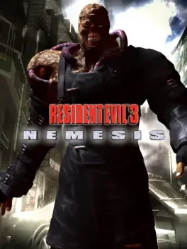
Resident Evil 3 (Classic)
9/10
07
Remake
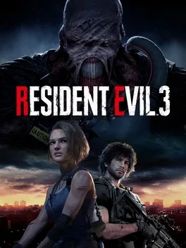
Resident Evil 3 Remake
6/10
08
Classic
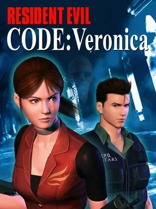
Code Veronica X
8/10
09
Classic

Resident Evil 4
8/10
10
Remake
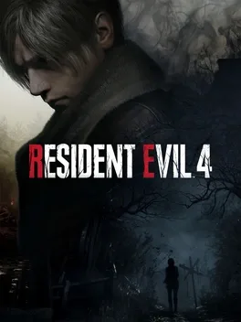
Resident Evil 4 Remake
9.5/10
11
Spin-Off
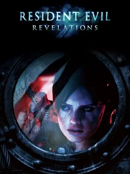
Resident Evil Revelations
8/10
12
Classic
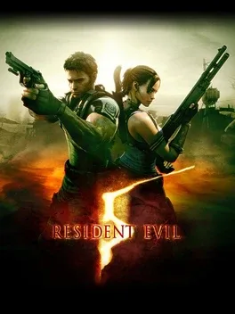
Resident Evil 5
8/10
13
Spin-Off
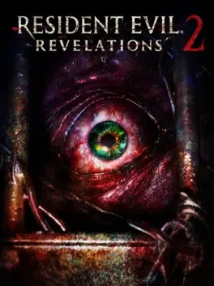
Resident Evil Revelations 2
7/10
14
Classic
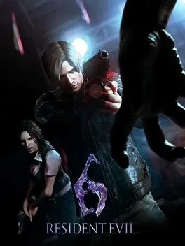
Resident Evil 6
6/10
15
Spin-Off
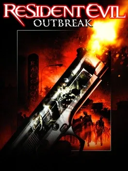
Resident Evil Outbreak
CONCEPT: 9
EXEC: 4
EXEC: 4
16
Spin-Off
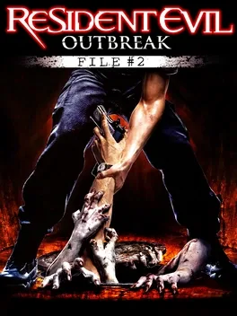
Outbreak File 2
INCOMPLETE
17
Mainline
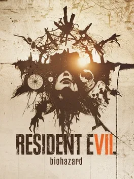
Resident Evil 7
8/10
18
Mainline
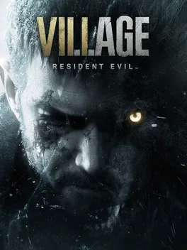
Resident Evil Village (RE8)
8/10
19
Mainline
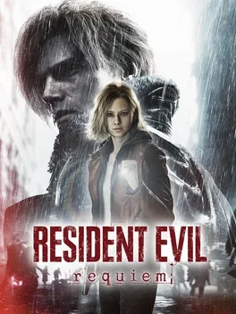
Resident Evil 9 Requiem
9/10
Click a slot to view the full review file
► TIMELINE
The complete Resident Evil release history
1996
Resident Evil 1
1998
Resident Evil 2
1999
Resident Evil 3
2000
Code Veronica
2002
Resident Evil 0
2003
Outbreak
2004
Outbreak File 2
2005
Resident Evil 4
2009
Resident Evil 5
2012
RE Revelations
Resident Evil 6
2015
RE1 Remaster
Revelations 2
2017
Resident Evil 7
2019
RE2 Remake
2020
RE3 Remake
2021
RE Village
2023
RE4 Remake
2026
RE9 Requiem
► WANTED FILES — Open Investigations
Cases pending. Remakes that should exist. Capcom, take note.
Case File #001
Priority: Critical
Code Veronica
Remake
Remake
Case File #002
Priority: High
Resident Evil 5
Remake
Remake
Case File #003
Priority: Critical
Outbreak
RE Engine Package
RE Engine Package
Case File #004
Priority: High
Resident Evil 1
RE Engine Remake
RE Engine Remake
Case File #005
Priority: Moderate
Resident Evil 0
Remake
Remake
Case File #006
Priority: Low
Resident Evil 6
Reimagined
Reimagined